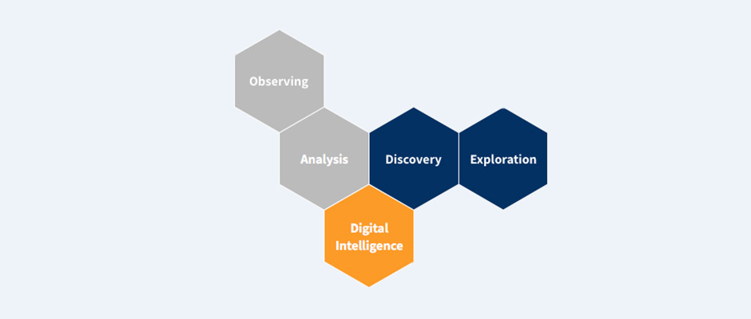

Welche Funktion erfüllt C3 PI ?
- Bei Kunden, Partnern oder Zulieferern wird Handlungsbedarf schnell und präzise erkannt und neues Business generiert.
- Medien- und Kommunikationsstrategien von Wettbewerbern werden entschlüsselt und die eigenen Strategien können flexibel angepasst werden.
- Veränderungen in Märkten wie Produktinnovationen, das Auftreten neuer Markt-Player oder sich verändernde rechtliche Regularien werden rechtzeitig erkannt.
- Allgemeine gesellschaftliche Trends werden mit den eigenen Business Tops verknüpft, wodurch Business Strategien leichter entwickelt und umgesetzt werden können.
Der Prozess
In der sogenannten Pre-Product Phase oder auch Consulting Phase werden gemeinsam mit dem Kunden die jeweiligen relevanten Felder wie Markt, Targets und Business Topics ermittelt. Das Wissen zur eigenen Organisation, zum Wettbewerb und dem Umfeld wird erhoben und in die Webanwendung übergeben. Über definierte Algorithmen aktualisieren sich die Daten automatisch. Der Nutzer kann über einen individuellen Login seine Informationen verarbeiten.
Was verbirgt sich hinter dem Namen?
Das C steht für Company, die 3 für die 3 Dimensionen BA (Business Areas), MP (Market Power) & EI (Event Incidents), das P für Perspective und das I für Intelligence.
Business Area beschreibt Organisationen und Märkte, Market Power stellt die Macht und Agilität von Organisationen dar und das Event Tracking bildet den Kontext von durch Nachrichten vermittelten Ereignissen sowie der Medien Reputation ab. Die jeweilige Perspektive für den Blick auf den Markt kann durch den Nutzer ausgewählt werden. Über künstlich erzeugte intelligente Verfahren lernt das System hinzu und erzeugt strategisch relevantes Wissen für den Entscheider.
Strukturierte Informationen
Wir greifen auf jede über das Internet zugängliche Quelle (z.B. Datenbanken, Webseiten, soziale Netzwerke) zu und sammeln alle für Sie relevanten Daten und Informationen. Hierzu nutzen wir Techniken wie Web Crawling und Scraping sowie Data- und Text-Mining. Durch die Anwendung automatisierter Algorithmen erzeugen wir dauerhafte Informationsflüsse und ermöglichen es Ihnen, Ihre wichtigsten Wettbewerber, Märkte und Stakeholder permanent zu beobachten. Doch wir lassen Sie nicht mit der Informationsflut alleine, sondern führen verstreute und unstrukturierte Daten zusammen und transformieren sie in anwendbares Wissen.

Ihr Weg zu strukturierten Informationen
Ausgangspunkt sind die Positionen von Zielorganisationen (Targets), die in einem ersten Schritt in den drei Dimensionen BA (Business Area), MP (Market Power) und EI (Event Incidents) lokalisiert werden. Im laufenden Betrieb können Bewegungsmomente durch die Analyse von digitalen Informationen nachgezeichnet werden.
Organisationen und Nachrichten werden über verschiedene Indikatoren wie: geografische Verbreitung, Umsatz, Mitarbeiteranzahl, Management, Profitabilität, Medien Performance, Event Kategorien etc. erfasst. Aggregiert stellen diese Daten Branchen, Märkte und Netzwerke dar. Alle Informationen sind visualisierbar. Im Zeitlauf werden Nachrichten (Blogs, Social Media, traditionelle journalistische Formate) aus den unterschiedlichsten Quellen analysiert und einzelne Events werden definierten Themen (z.B. Business Topics) sowie Organisationen zugeordnet.
Der Nutzer kann sich über ein Dashboard durch einzelne Business Areas sowie Märkte und Netzwerke zoomen. Auf der untersten Ebene können Organisationen und Events betrachtet werden. Bei Bedarf kann der Nutzer Branchen, Unternehmen, oder Business Topics folgen und erstellt so eine individuelle und fokussierte Perspektive auf den Markt. Optional können Social Media Daten hinsichtlich der Stimmungslage zu Business Topics und Events untersucht werden (Sentiment Analysis).
Individuelle Lösungsmodelle mit C3 PI
Unsere Lösungen sind dabei so individuell wie Ihre Anforderung: Ob Steigerung der Executive Performance in ihrer Organisation, individuelle strategische Projektplanungen oder ein professionelles Career Management. Durch Data-Transformation gestalten wir einzigartige Lösungsmodelle. Lassen Sie sich dafür gern durch eine Auswahl unserer Kundenprojekte inspirieren oder nehmen sie direkt Kontakt mit uns auf.